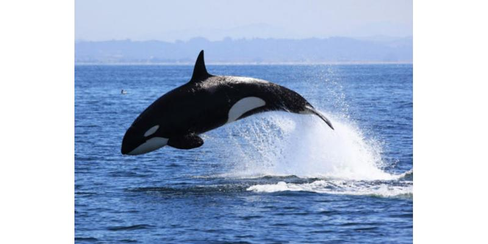

استكشف تاريخ الحيتان وتعرف على قدراتهم الفيسيولوجية على التكيّف للعيش في البيئة البحرية. تعرف في هذه الورشة الكائنات العجيبة التي تطورت على مر العصور، وازدد معرفة بتشريحها وعظامها وسماتها الفريدة، بل وأدرك أوجه الشبه والاختلاف فيما بين هذه الكائنات البحرية البديعة. *ملاحظة: للمشاركة بالاختبار خلال الورشة الافتراضية الرجاء تجهيز بعض السمن والماء البارد مع مكعبات الثلج!
نضم الينا لمحاضرة حول الطبعات الأولى لدواوين الشعراء الكويتيين. حيث يقدم الباحث ومقتني الطبعات القديمة والآثار الكويتية الأستاذ فهد العبدالجليل نبذة عن أولى دواوين الشعر المطبوعة لأهم الشعراء في تاريخ الكويت – منهم الشعراء عبد الله الفرج وفهد العسكر وفهد بورسلي. سنناقش في هذه الحلقة نبذة عما تميزت به دواوين الشعراء الأولين، وتاريخ ومكان طباعة تلك الدواوين، وعن آلية الطباعة والأسباب التي ساعدت